N1：既有诊断例（事后对照）
十字点 EXPAND 73.536 → RECON 73.536 → DOMAIN 70.478 → CONTEXT 70.478 → FINAL 70.478；map guard=0.000；有地图

原156＋新50日期一次真实推理；0新参数、0拟合。下图均为同场同色限、原有效支持。原36场无地图标NO_MAP_CONTEXT。
结论与不利场 · 逐步变化 · 原36道路/控制 · 25真实事件对
十字点 EXPAND 21.311 → RECON 21.311 → DOMAIN 21.311 → CONTEXT 18.307 → FINAL 18.307；map guard=0.000；NO_MAP_CONTEXT
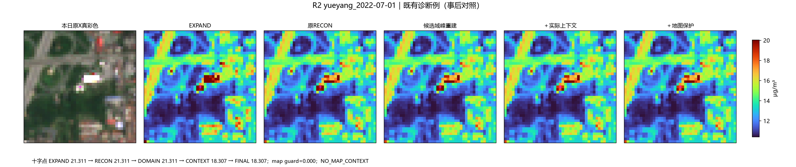
十字点 EXPAND 36.206 → RECON 36.206 → DOMAIN 36.206 → CONTEXT 31.086 → FINAL 31.086；map guard=0.000；有地图
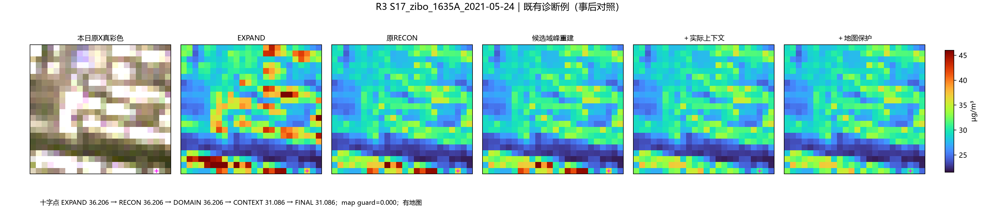
十字点 EXPAND 46.637 → RECON 46.637 → DOMAIN 46.637 → CONTEXT 36.863 → FINAL 36.863；map guard=0.000；有地图
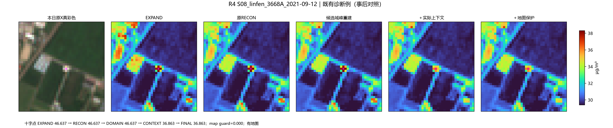
十字点 EXPAND 44.284 → RECON 44.284 → DOMAIN 44.284 → CONTEXT 39.408 → FINAL 39.408；map guard=0.000；有地图
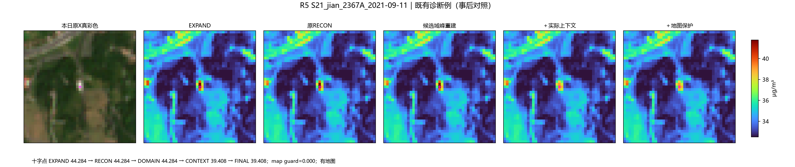
十字点 EXPAND 26.761 → RECON 26.761 → DOMAIN 26.761 → CONTEXT 23.846 → FINAL 23.846；map guard=0.000；NO_MAP_CONTEXT
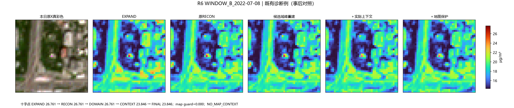
十字点 EXPAND 73.536 → RECON 73.536 → DOMAIN 70.478 → CONTEXT 70.478 → FINAL 70.478；map guard=0.000；有地图
十字点 EXPAND 30.758 → RECON 30.758 → DOMAIN 26.991 → CONTEXT 26.991 → FINAL 26.991；map guard=0.000；有地图
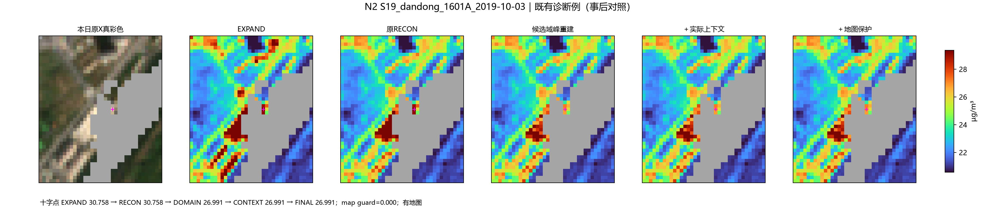
十字点 EXPAND 40.516 → RECON 40.516 → DOMAIN 35.864 → CONTEXT 35.864 → FINAL 35.864；map guard=0.000；有地图

此结构身份未确认，不列为屋顶抑制成功；本点扣量4.652仍全部保留。
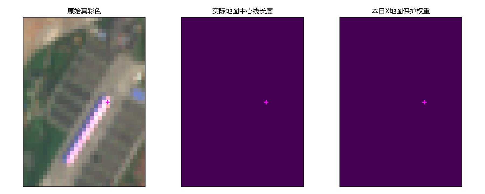
十字点 EXPAND 39.887 → RECON 35.016 → DOMAIN 35.016 → CONTEXT 35.016 → FINAL 38.599；map guard=0.736；有地图
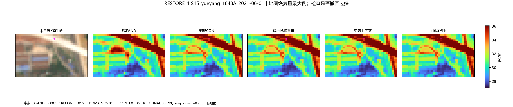
十字点 EXPAND 50.201 → RECON 30.763 → DOMAIN 30.763 → CONTEXT 30.763 → FINAL 33.993；map guard=0.166；有地图
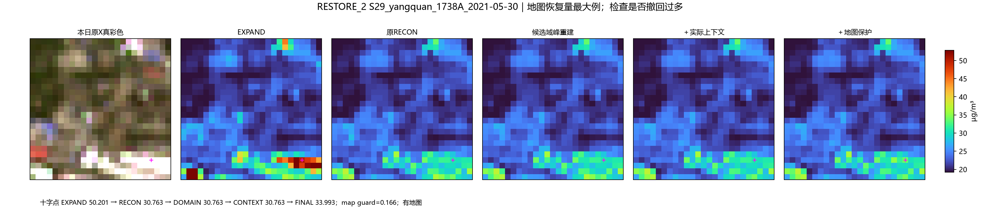
十字点 EXPAND 30.993 → RECON 24.985 → DOMAIN 24.985 → CONTEXT 24.985 → FINAL 28.051；map guard=0.510；有地图
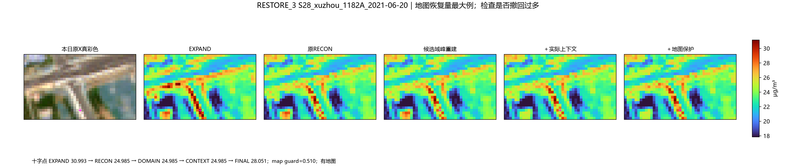
全域恢复量较小，但有些局部对象恢复其原扣量的一大部分。它们是输入定义的小亮对象，未确认都是房顶。
四点下降已全部存在于原RECON，本次DOMAIN/CONTEXT/MAP未新增扣量。原输入均有大于1波段；其中两点在窗口边缘且缺双向路径支持。
S13_yangquan_1742A_2021-02-01；对象平均恢复0.827 µg/m³，撤回56.2%原扣量。
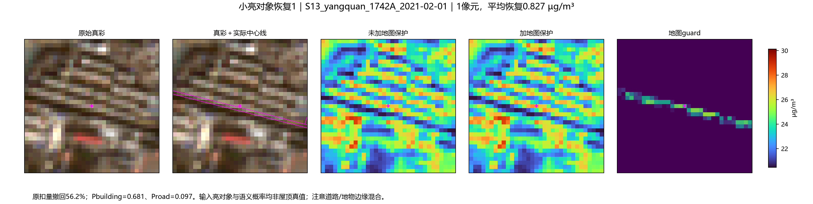
EVENT_S20_daqing_1791A_2020-10-10；对象平均恢复0.746 µg/m³，撤回51.9%原扣量。
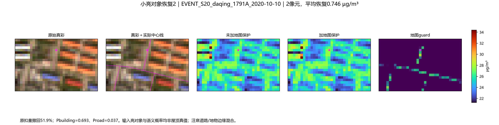
S28_xuzhou_1182A_2021-10-13；对象平均恢复0.742 µg/m³，撤回41.5%原扣量。
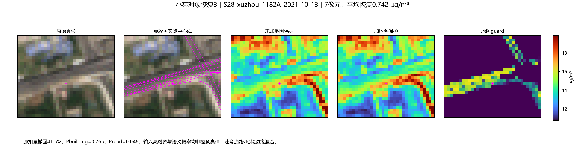